Welded gabion boxes are one of the most versatile and durable solutions for retaining walls, erosion control, landscaping features, and architectural facades. Their rigid welded mesh construction provides superior dimensional accuracy and easier installation compared to traditional woven gabions. This guide walks you through every step of the installation process, from initial site preparation to the final finished structure.

Tools and Materials Needed
Before starting, gather the following tools and materials:
- Welded gabion boxes (pre-assembled panels)
- Spiral ring fasteners or lacing wire
- Geotextile fabric
- Gravel or crushed stone for base
- Gabion stone fill (80-200mm)
- Measuring tape and marking spray paint
- Shovel and hand tamper or plate compactor
- Wire cutters and pliers
- Level and string line
- Work gloves and safety equipment
Step 1: Site Layout and Marking
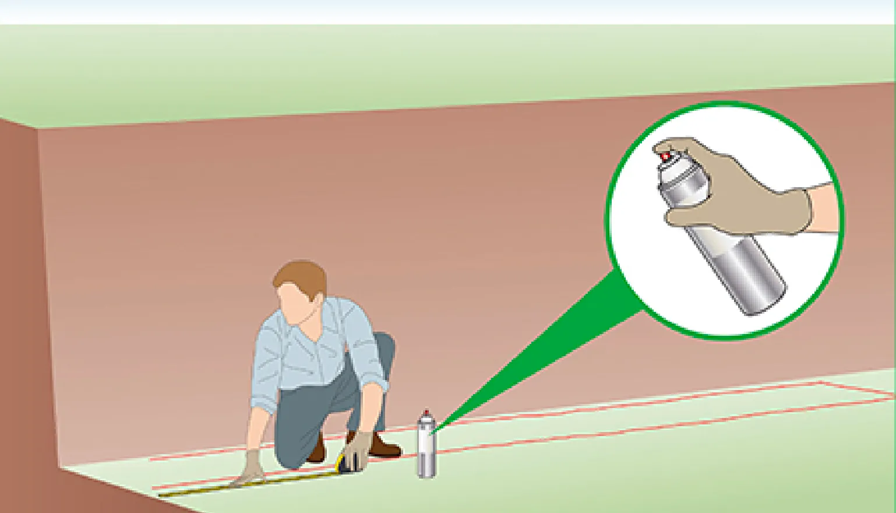
The first step in any gabion installation is accurate site layout. Use a measuring tape to determine the exact placement and dimensions of your gabion structure. Mark the outline on the ground using spray paint, clearly indicating where the front face, back face, and ends of the gabion wall will be positioned.
Key tips:
- Mark both the outer perimeter and the centerline of the wall
- Check for underground utilities before marking
- Ensure the layout accounts for the gabion's batter angle (typically 6 degrees)
- Use string lines between stakes for straight walls
Step 2: Foundation Excavation
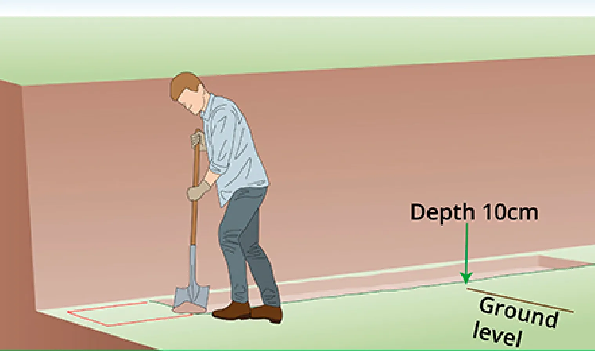
Once the layout is marked, excavate the foundation area to a depth of approximately 10-15cm (4-6 inches). The trench should be slightly wider than the gabion box dimensions to allow for adjustments during placement.
Key tips:
- Remove all organic material, topsoil, and loose debris
- For taller walls (over 1m), increase excavation depth to 15-20cm
- Ensure the bottom of the trench is level across the entire length
- Check soil bearing capacity — soft or clay soils may require deeper foundations
Step 3: Base Compaction
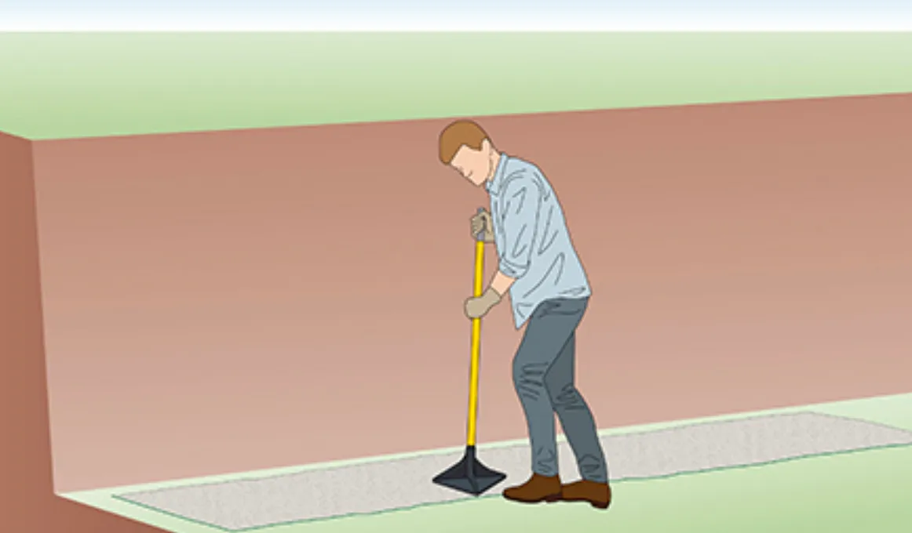
After excavation, compact the base of the trench thoroughly using a hand tamper or mechanical plate compactor. A well-compacted base is essential for preventing differential settlement that could cause the gabion wall to tilt or shift over time.
Key tips:
- Compact in layers of 5cm (2 inches) for best results
- Aim for 95% Proctor density or follow engineer specifications
- Maintain level tolerance within ±25mm (1 inch)
- Moisten dry soil slightly before compacting for better results
Step 4: Geotextile Placement
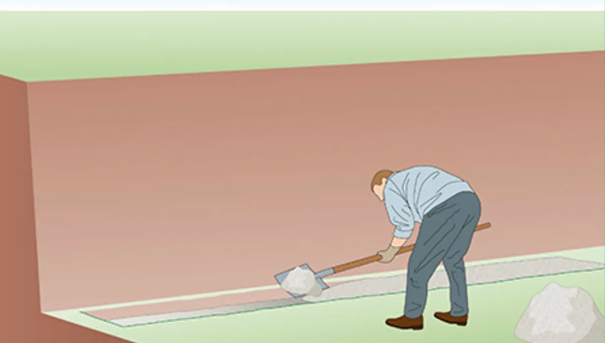
Lay geotextile fabric along the entire excavated area, extending it beyond the gabion footprint by at least 30cm on each side. The geotextile serves as a critical separation layer between the gabion fill and native soil, preventing soil migration and ensuring long-term drainage performance.
The geotextile allows water to permeate through while retaining fine soil particles. This prevents piping and erosion beneath the gabion structure, which is one of the most common causes of gabion wall failure.
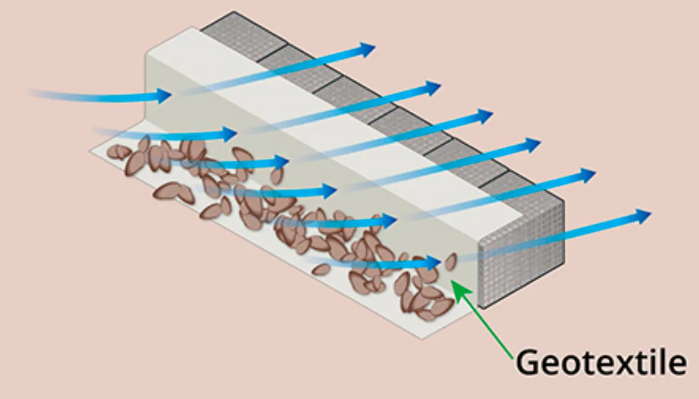
Key tips:
- Use non-woven geotextile (100-200 g/m²) for most applications
- Overlap seams by at least 30cm
- Extend geotextile up the back of the excavation for retaining wall applications
- Pin the fabric in place with staples or stakes before placing aggregate
Step 5: Setting the Batter Angle
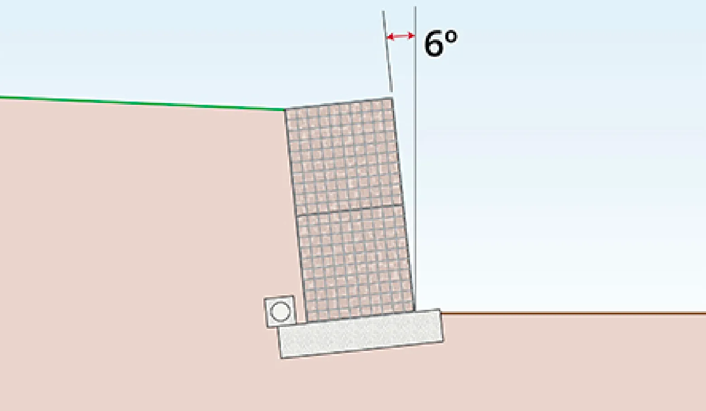
For retaining walls, gabion boxes should be installed with a backward lean (batter) of approximately 6 degrees toward the retained soil. This angle shifts the center of gravity toward the soil mass and improves resistance against overturning forces from lateral earth pressure.
Key tips:
- Use temporary bracing or formwork to maintain the 6-degree angle during filling
- Check the angle frequently with an inclinometer or spirit level
- The batter compensates for potential settlement and mesh bulging under stone load
- For free-standing walls (non-retaining), a vertical installation is acceptable
Step 6: Unfold and Assemble Gabion Boxes
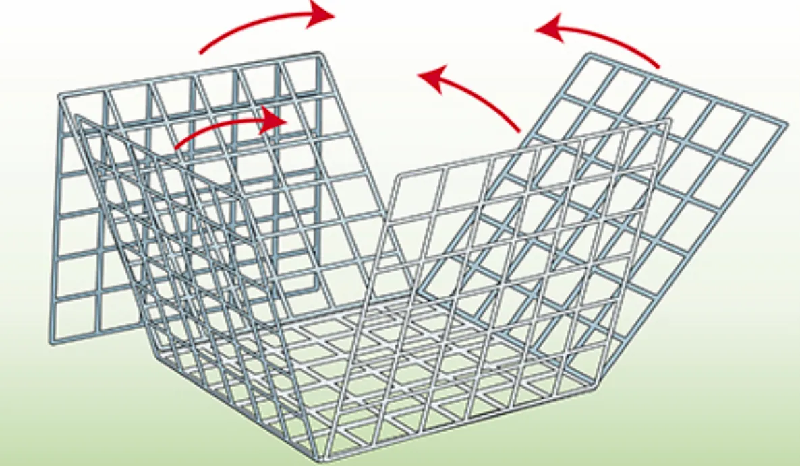
Welded gabion boxes are delivered flat-packed for transport efficiency. Unfold each unit by lifting the side panels upward 90 degrees to form the rectangular box shape. Ensure all panels are properly aligned and the box sits squarely on the prepared base.
Key tips:
- Unfold boxes close to their final position to minimize handling
- Check that all mesh panels are undamaged before assembly
- Ensure the base panel sits flat and level on the foundation
- For multi-cell gabions, install internal diaphragms before filling
Step 7: Connect Adjacent Gabion Units
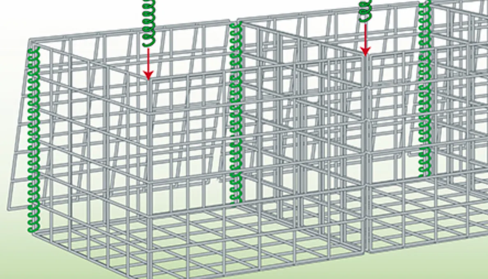
Join adjacent gabion boxes together using spiral ring fasteners (also called helical binders or C-rings). Thread the spiral rings through the aligned mesh openings along the vertical edges where two gabion units meet. This creates a continuous, monolithic structure that prevents individual units from separating under load.
Key tips:
- Engage every mesh opening along the vertical joint for full structural continuity
- Use approximately 3 rings per 100mm of height
- Ensure adjacent boxes are aligned before connecting
- Spiral rings should be tight with no gaps between mesh panels
Step 8: Lacing and Panel Reinforcement
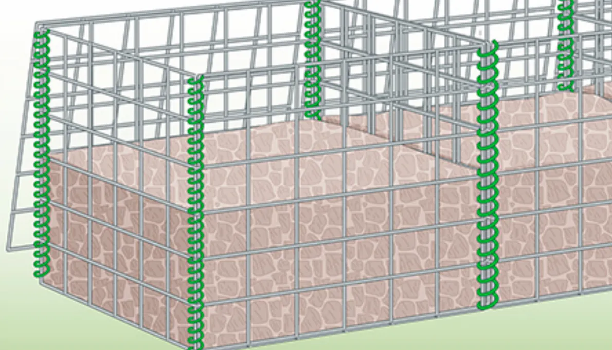
For multi-cell gabions and critical structural connections, install additional spiral rings along all panel joints — including vertical seams between cells and horizontal division lines. This ensures the entire gabion assembly acts as an integrated structural unit.
Key tips:
- Install lacing before filling to allow access to interior joints
- Use continuous spiral binding for maximum strength
- Pay special attention to corners and edge junctions (stress concentration points)
- Double-lace corners for walls over 2m in height
Step 9: Fill with Stone
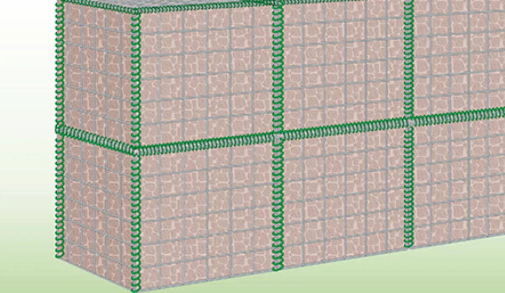
Fill the gabion boxes with clean, hard stone ranging from 80mm to 200mm in size. Place stones by hand or machine in layers, ensuring a tight, interlocking fit with minimal voids. Fill to approximately 25-50mm below the top edge to allow for lid closure and settlement.
Key tips:
- Use angular or semi-angular stone for better interlock (avoid round river stone for structural walls)
- Include 30-40% smaller stones (80-100mm) to fill voids between larger rocks
- Place the largest stones at the outer face for a clean appearance
- Fill in even layers rather than dumping stone in one location
- Hand-place face stones for architectural applications
Step 10: Close and Secure the Lid
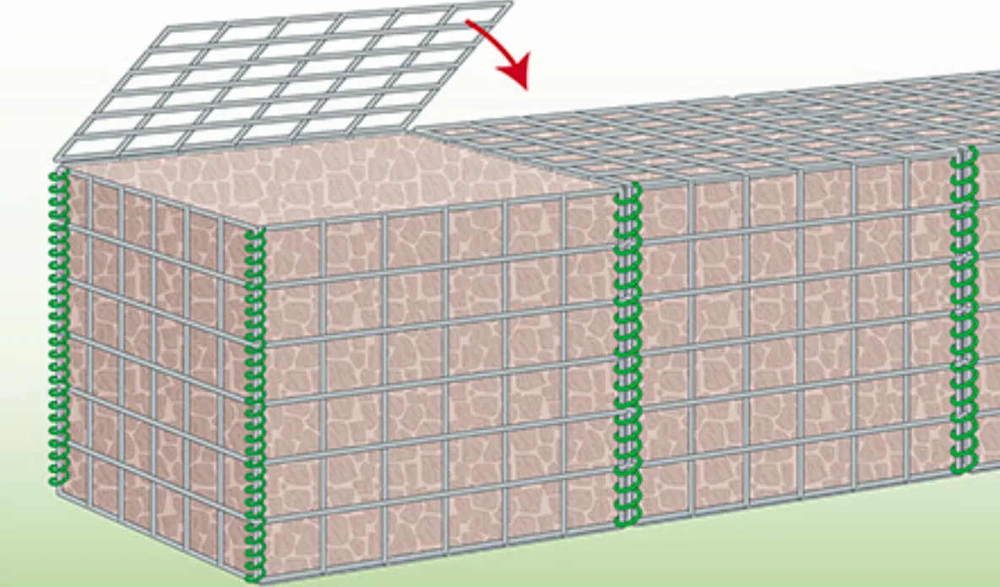
Once the gabion is filled to the proper level, place the wire mesh lid on top and secure it to the box edges using spiral ring fasteners or lacing wire. The lid must be tightly secured to prevent stone displacement and maintain structural integrity under load.
Key tips:
- Ensure fill level is 25-50mm below the top before closing
- Lace the lid at every mesh opening along all four edges
- Pull the lid tight to eliminate gaps between lid and side panels
- For multi-course walls, connect the lid to the base of the upper course
Step 11: Stack Additional Courses
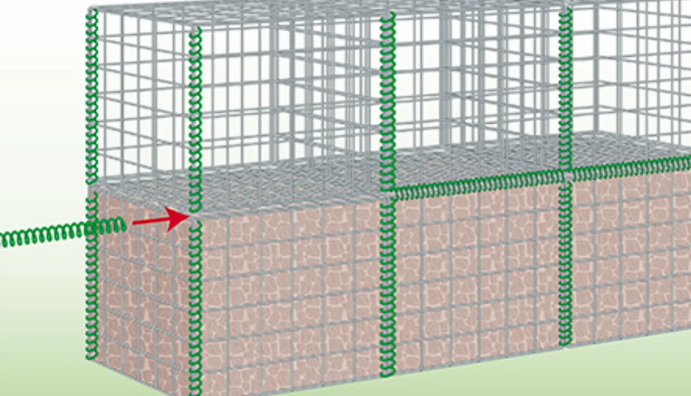
For walls requiring additional height, place the next course of gabion boxes on top of the completed lower course. Connect the upper and lower units using spiral rings threaded through the mesh openings at the horizontal joint. Always connect before filling the upper unit.
Key tips:
- Maintain the 6-degree batter angle as courses are added
- Stagger vertical joints between courses (like brickwork)
- Fill the upper course only after it is fully connected to the course below
- Limit height to 1m per course for safe filling access
Step 12: Backfilling (For Retaining Walls)
For retaining wall applications, backfill behind the gabion structure with granular material in layers of 15-20cm, compacting each layer thoroughly. Install a drainage pipe at the base of the wall if groundwater is present.
Finished Installation
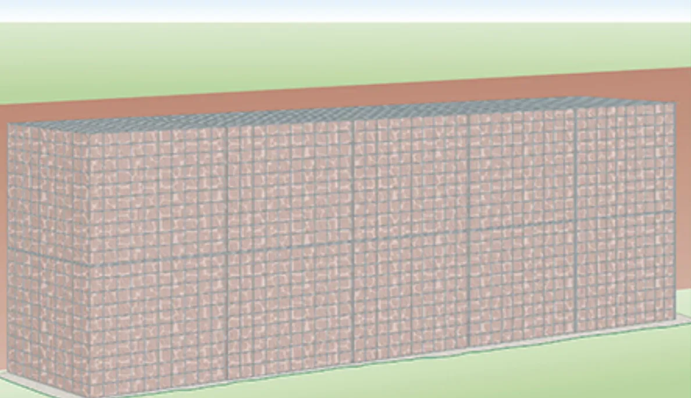
When all steps are completed correctly, your welded gabion structure will provide decades of reliable service with minimal maintenance. The rigid welded mesh construction ensures clean lines, precise dimensions, and superior structural performance compared to traditional woven gabions.
Common Mistakes to Avoid
- Skipping geotextile: Always install geotextile to prevent soil erosion beneath the gabion
- Poor compaction: An uncompacted base leads to differential settlement and wall failure
- Overfilling: Never fill above the top edge — leave room for lid closure
- Ignoring the batter angle: Vertical walls are less stable than properly battered walls
- Using round stone only: Mix stone sizes for better interlock and structural stability
- Inadequate lacing: Every joint must be fully laced for structural continuity
Need a chain-link fence replacement or upgrade? At Kestrel Metal, we supply premium galvanized and PVC-coated chain link fencing along with complete fittings and accessories. Our experienced team provides technical support and competitive pricing with worldwide shipping. Request a Quote today — we respond within 24 hours with detailed specifications and pricing for your project.